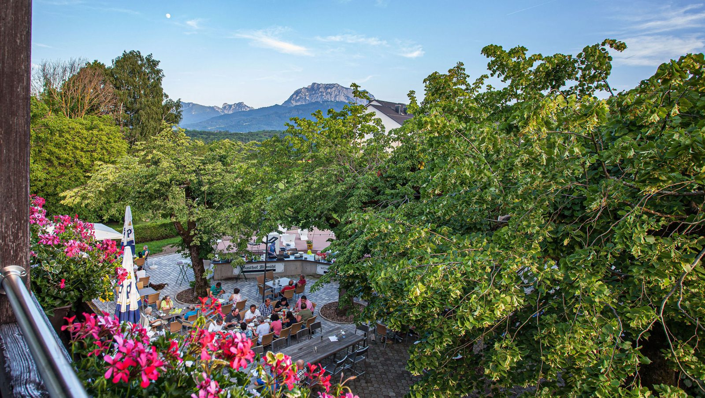
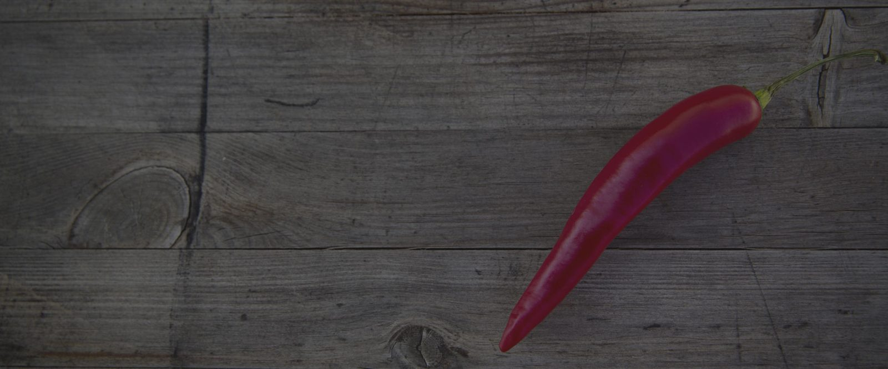

Gaststuben
In unseren Stuben inklusive Bar stehen 210 rauchfreie Plätze zur Verfügung — gemütlich unterteilt, sodass auch größere Gesellschaften ihren eigenen Bereich haben.
210 rauchfreie Plätze in den Stuben inklusive Bar, rund 100 Plätze im schattigen Gastgarten und drei vollautomatische Kegelbahnen mit eigener Schankanlage.
Auch nach dem großen Umbau laden unsere drei Kegelbahnen zu gemütlichen Partien ein. Neben den Bahnen gibt es ausreichend Sitzplätze sowie eine eigene Schank — die Bahnen werden gerne für Firmen- und private Feiern gebucht.

In unseren Stuben inklusive Bar stehen 210 rauchfreie Plätze zur Verfügung — gemütlich unterteilt, sodass auch größere Gesellschaften ihren eigenen Bereich haben.
Der schattige Gastgarten bietet Platz für rund 100 Personen, mit schönem Kinderspielplatz direkt daneben. Im Juli und August: Grillabende jeden Freitag bei Schönwetter.
Seit 2024 ergänzt ein eleganter Glasbalkon das Haus — eine einladende Außenfläche, die sich nahtlos in die Architektur einfügt.

Gemütliche Stuben für Ausflugsgäste, für große und kleine Reisegruppen: Warme Küche von Mittwoch bis Samstag von 11:30–20:30 Uhr, Sonn- und Feiertags durchgehend von 11:00–18:00 Uhr.
Busgruppen, Vereine und Radlergruppen melden sich am besten vorab — dann steht Ihr Bereich zur gewünschten Zeit bereit. Auf Wunsch kombinieren wir Essen und Kegelbahn zu einem Nachmittag.
Kostenloses WLAN im gesamten Gasthof, Kinderspielplatz beim Gastgarten, Parkmöglichkeiten beim Haus.
Sagen Sie uns, was Sie vorhaben — wir melden uns mit einem Vorschlag.